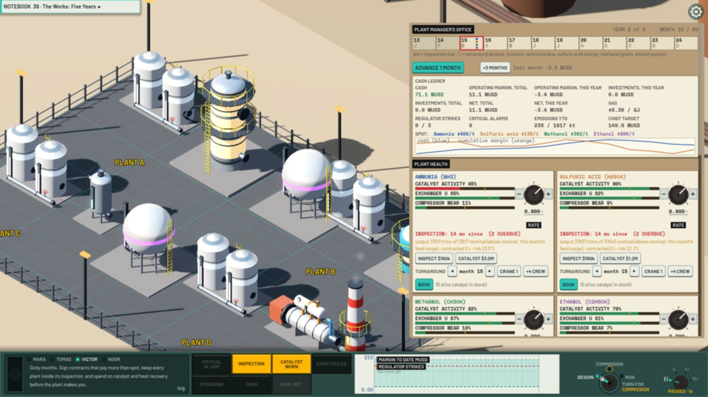
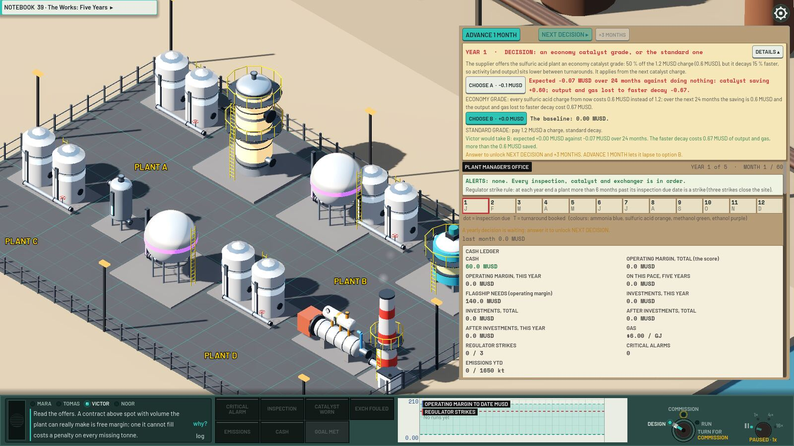
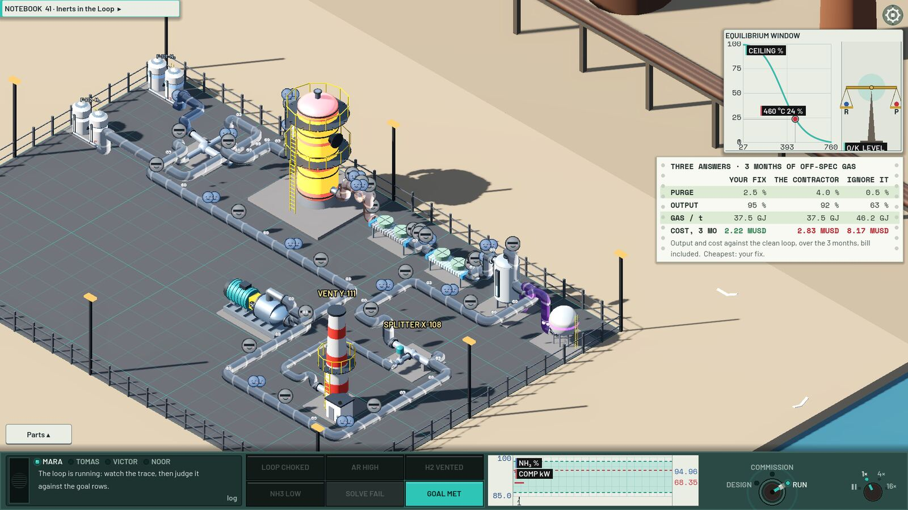

Wiki / Career
The Works: Five Years
What it teaches. Running a works over time: contracts, wear, inspections and turnarounds, and what they cost. Classic look



The brief
- Sixty months. Sign contracts that pay more than spot, keep every plant inside its inspection, and spend on catalyst and heat recovery before the plant makes you.
- Three critical alarms or three regulator strikes close the site. Two losing years or empty accounts and the board sells it.
What happens in a year
Contracts and price walks, catalyst decay, fouling, wear, inspections, turnarounds, incidents, emissions caps, investments, and an annual review. When inerts creep into the ammonia feed you can go to the plant and fix the purge yourself, call a contractor, or ignore it.